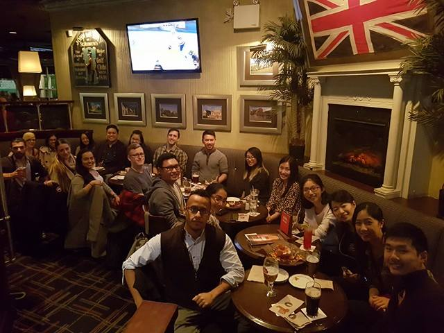
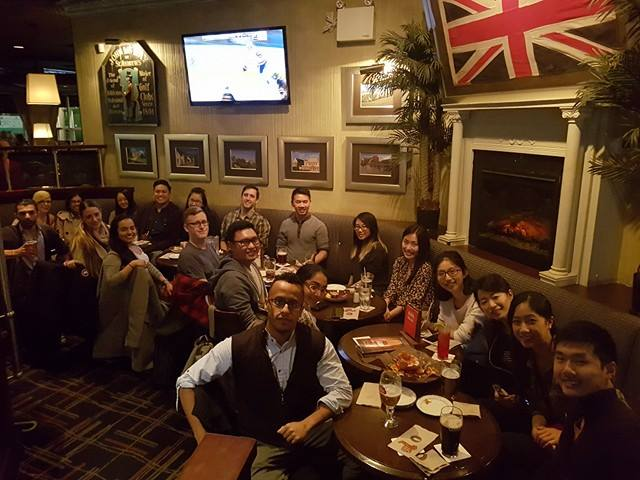
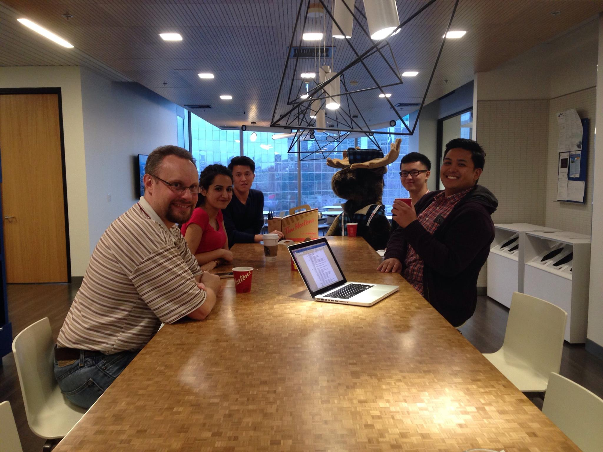
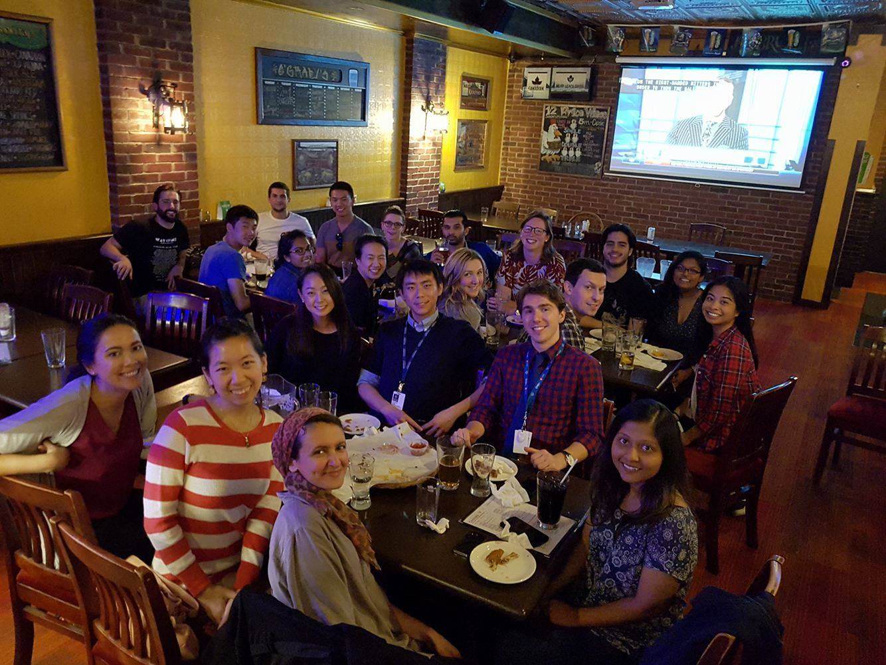
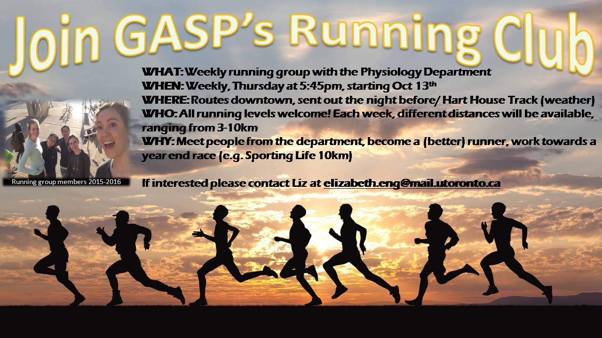

November Pub Night
We had another successful pubnight at Duke of Somerset for November. 
more ...We had another successful pubnight at Duke of Somerset for November. 
more ...Friday Night Live at the ROM for Halloween was a great success!

October's off-campus coffee break was held at the Ted Rogers Centre at MaRS, keep on the lookout for future coffee breaks near you!

We had a great turnout for our October pub night at O'Grady's. Hope to see you at the next one!

more ...
Running Club has become a tradition in the Physiology Department, and is starting up again for the year! We meet weekly Thursdays at 5:45PM in the MSB Stone Lobby. Routes are downtown and range from 3K to 10K, with multiple routes offered each week depending on what the group wants. We run in Hart House on the track if weather does not permit outdoor running.
ALL LEVELS ARE WELCOME as Running Club is a way to meet other Students in Physiology, train together, and possibly achieve a goal of competing in a race at the end of the year (e.g., in 2016, Sportinglife 10KM)
If you would like to join, please email Liz.
Our first run will be Thursday October 13th, but new members are welcome throughout the year. Also, if you want to join but Thursday does not work for you, please contact me anyways and we may be able to arrange an alternate day.
Best,
Liz